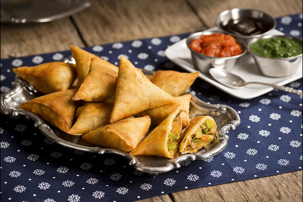

Briouats
El briuat es un pastelito de hojaldre con forma triangular o cilíndrica y sabor dulce o salado, típico de la gastronomía marroquí. Algunos rellenos comunes son de pollo o cordero, pescado, mariscos, fideos, patatas u otras verduras. Estos rellenos se suelen especiar bastante.
Ingredientes para hacer una Briouats: |
|
Pasos:
• Paso 1: Picamos la manzana y el plátano, los mezclamos con la almendra, la yema, dos cucharadas de miel y agua de azahar.
• Paso 2: Rellenamos rectángulos de pasta brick pintados con AOVE con la mezcla de almendras y los cerramos en forma de triángulo.
• Paso 3: Los horneamos a 180ºC hasta que queden dorados, aproximadamente 12 minutos, y los pintamos con miel rebajada con agua.
• Paso 4: Espolvoreamos el sésamo por encima.